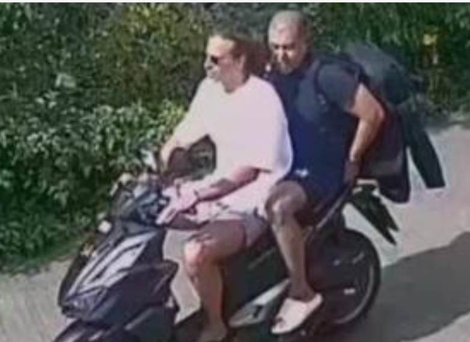

En la prisión de Koh Samu, al sur de Tailandia, se encuentra ingresado Daniel Sancho, confeso asesino del médico colombiano Edwin Arrieta. Un juez del tribunal le decretó prisión provisional mientras espera el juicio, tras presentar los cargos de asesinato con premeditación y ocultación de pruebas de un delito. En declaraciones con la agencia EFE, el joven señaló: "Soy culpable, pero yo era el rehén de Edwin. Me tenía como rehén. Era una jaula de cristal, pero era una jaula. Me hizo destruir la relación con mi novia, me ha obligado a hacer cosas que nunca hubiera hecho".
Las investigaciones del caso apuntan a que Edwin Arrieta reservó una habitación en un hotel en Koh Phangan para su estancia entre el 31 de julio y el 3 de agosto. Cámaras de seguridad, con fecha de 1 de agosto, muestran a Daniel Sancho, quien arribó primero a la isla que su compañero, en un supermercado, comprando un cuchillo, bolsas de basura, productos de limpieza y otros utensilios que, al parecer, fueron utilizados en el asesinato del cirujano.
De acuerdo con 'Bangkok Post', el joven y el médico colombiano se encontraron en un muelle el 3 de agosto, y viajaron en motocicleta. Una vez arribaron a la habitación de hotel, Sancho golpeó a su compañero en el rostro, dejándolo en estado de inconsciencia. Después de una hora, y tras intentar que la víctima recuperara la lucidez, comenzó el desmembramiento, que duró alrededor de tres horas.
El chef, según el relato que fue compartido por medios de comunicación internacionales, introdujo los restos en bolsas de basura, que posteriormente arrojó al mar y a un botadero de la isla. En el hotel donde se hospedaba, las autoridades hallaron "80 mil dólares estadounidenses y un collar de oro que pertenecía al colombiano".
Sancho reportó la desaparición del cirujano colombiano el jueves 3 de agosto, el mismo día que un recolector de basura encontró partes humanas en una bolsa de fertilizantes e iniciaron las sospechas de las autoridades. Un día después, el viernes, se hallaron más restos junto con una camiseta y pantalones cortos. El confeso asesino comenzó a ser interrogado el viernes por los cortes y arañazos que mostraba en su cuerpo el día que denunció la desaparición. En este momento, se encuentra en prisión preventiva y deberá estar aislado 10 días por el protocolo del covid-19.
